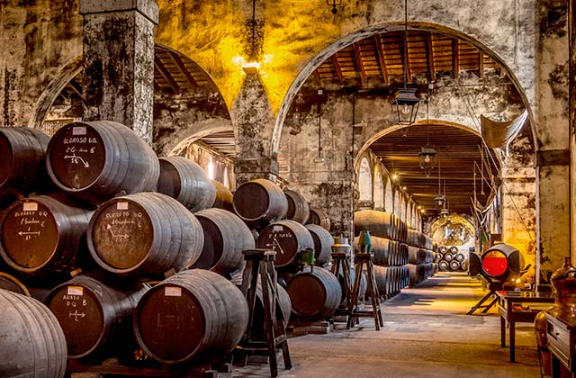
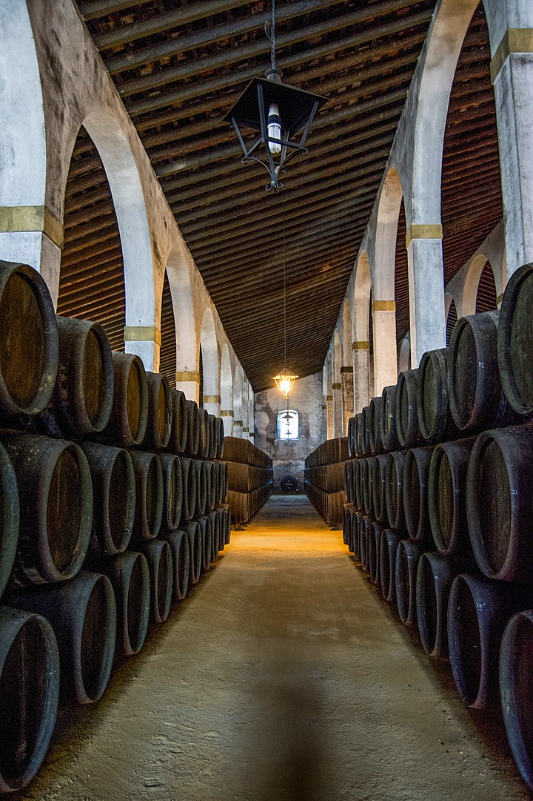
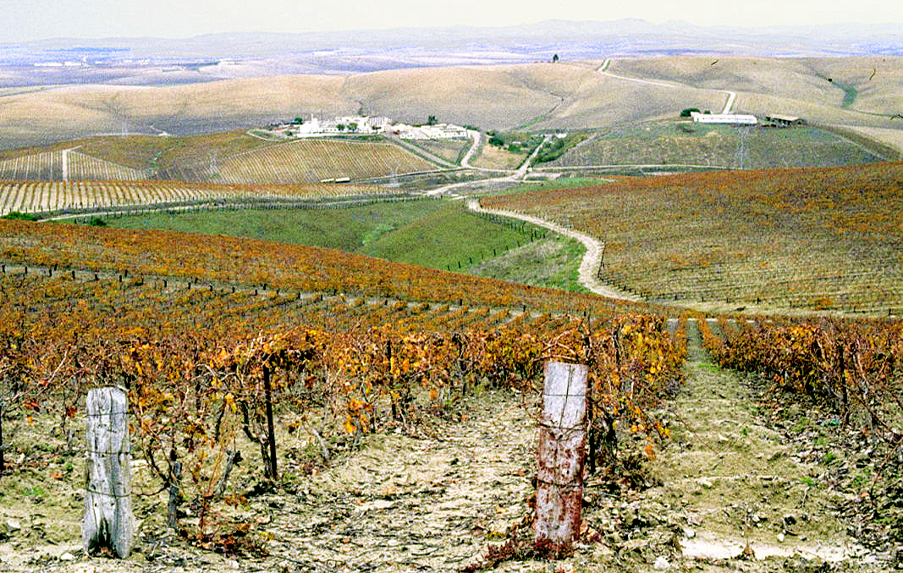

Bodegas de Jerez
Las bodegas de Jerez son famosas en todo el mundo por la calidad de sus vinos. En la ciudad y sus alrededores se pueden encontrar numerosas bodegas, cada una con su propia historia y tradición. Visitar una bodega es una experiencia única, en la que se puede aprender sobre la elaboración de los vinos y degustar algunas de las variedades más famosas.
Bodega Tío Pepe
La bodega Tío Pepe es una de las bodegas más famosas de Jerez. Fundada en 1835, la bodega cuenta con un impresionante sistema de criaderas y soleras, que permiten obtener algunos de los vinos más prestigiosos de la región. Durante la visita a la bodega, se puede ver el proceso de elaboración de los vinos y disfrutar de una degustación. Estas son sus botellas más famosas:
Bodega González Byass
La bodega González Byass es otra de las bodegas más famosas de Jerez. Fundada en 1835, esta bodega cuenta con una impresionante colección de vinos, algunos de los cuales tienen más de 100 años. Durante la visita a la bodega, se puede aprender sobre la historia y la elaboración de los vinos, y disfrutar de una degustación. Estas son sus botellas más famosas:
Bodega Williams & Humbert
La bodega Williams & Humbert es una de las bodegas más antiguas de Jerez. Fundada en 1877, esta bodega cuenta con una impresionante colección de vinos, algunos de los cuales tienen más de 100 años. Durante la visita a la bodega, se puede aprender sobre la historia y la elaboración de los vinos, y disfrutar de una degustación. Estas son sus botellas más famosas:
